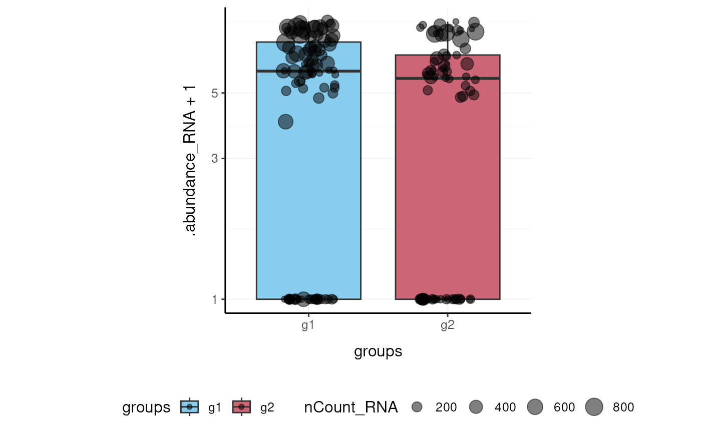

Overview of the tidyseurat package
Stefano Mangiola
2020-10-20
introduction.Rmd
Brings Seurat to the tidyverse!
website: stemangiola.github.io/tidyseurat/
Please also have a look at
- tidybulk for tidy bulk RNA-seq analysis
- nanny for tidy high-level data analysis and manipulation
- tidygate for adding custom gate information to your tibble
- tidyHeatmap for heatmaps produced with tidy principles
Introduction
tidyseurat provides a bridge between the Seurat single-cell package (Butler et al. 2018; Stuart et al. 2019) and the tidyverse (Wickham et al. 2019). It creates an invisible layer that enables viewing the Seurat object as a tidyverse tibble, and provides Seurat-compatible dplyr, tidyr, ggplot and plotly functions.
Functions/utilities available
| Seurat-compatible Functions | Description |
|---|---|
all |
After all tidyseurat is a Seurat object, just better |
| tidyverse Packages | Description |
|---|---|
dplyr |
All dplyr APIs like for any tibble |
tidyr |
All tidyr APIs like for any tibble |
ggplot2 |
ggplot like for any tibble |
plotly |
plot_ly like for any tibble |
| Utilities | Description |
|---|---|
tidy |
Add tidyseurat invisible layer over a Seurat object |
as_tibble |
Convert cell-wise information to a tbl_df
|
join_transcripts |
Add transcript-wise information, returns a tbl_df
|
Installation
From CRAN
install.packages("tidyseurat")
From Github (development)
devtools::install_github("stemangiola/tidyseurat")
Create tidyseurat, the best of both worlds!
This is a seurat object but it is evaluated as tibble. So it is fully compatible both with Seurat and tidyverse APIs.
pbmc_small_tidy <- tidyseurat::pbmc_small %>% tidy()
It looks like a tibble
pbmc_small_tidy## # A tibble abstraction: 80 x 16
## cell orig.ident nCount_RNA nFeature_RNA RNA_snn_res.0.8 letter.idents groups
## <chr> <fct> <dbl> <int> <fct> <fct> <chr>
## 1 ATGC… SeuratPro… 70 47 0 A g2
## 2 CATG… SeuratPro… 85 52 0 A g1
## 3 GAAC… SeuratPro… 87 50 1 B g2
## 4 TGAC… SeuratPro… 127 56 0 A g2
## 5 AGTC… SeuratPro… 173 53 0 A g2
## 6 TCTG… SeuratPro… 70 48 0 A g1
## 7 TGGT… SeuratPro… 64 36 0 A g1
## 8 GCAG… SeuratPro… 72 45 0 A g1
## 9 GATA… SeuratPro… 52 36 0 A g1
## 10 AATG… SeuratPro… 100 41 0 A g1
## # … with 70 more rows, and 9 more variables: RNA_snn_res.1 <fct>, file <chr>,
## # PC_1 <dbl>, PC_2 <dbl>, PC_3 <dbl>, PC_4 <dbl>, PC_5 <dbl>, tSNE_1 <dbl>,
## # tSNE_2 <dbl>But it is a Seurat object after all
pbmc_small_tidy@assays
## $RNA
## Assay data with 230 features for 80 cells
## Top 10 variable features:
## PPBP, IGLL5, VDAC3, CD1C, AKR1C3, PF4, MYL9, GNLY, TREML1, CA2Annotation polishing
We may have a column that contains the directory each run was taken from, such as the “file” column in pbmc_small_tidy.
pbmc_small_tidy$file[1:5]
## ATGCCAGAACGACT
## "../data/sample2/outs/filtered_feature_bc_matrix/"
## CATGGCCTGTGCAT
## "../data/sample1/outs/filtered_feature_bc_matrix/"
## GAACCTGATGAACC
## "../data/sample2/outs/filtered_feature_bc_matrix/"
## TGACTGGATTCTCA
## "../data/sample2/outs/filtered_feature_bc_matrix/"
## AGTCAGACTGCACA
## "../data/sample2/outs/filtered_feature_bc_matrix/"We may want to extract the run/sample name out of it into a separate column. Tidyverse extract can be used to convert a character column into multiple columns using regular expression groups.
# Create sample column pbmc_small_polished <- pbmc_small_tidy %>% extract(file, "sample", "../data/([a-z0-9]+)/outs.+", remove = FALSE) # Reorder to have sample column up front pbmc_small_polished %>% select(sample, everything())
## # A tibble abstraction: 80 x 17
## cell sample orig.ident nCount_RNA nFeature_RNA RNA_snn_res.0.8 letter.idents
## <chr> <chr> <fct> <dbl> <int> <fct> <fct>
## 1 ATGC… sampl… SeuratPro… 70 47 0 A
## 2 CATG… sampl… SeuratPro… 85 52 0 A
## 3 GAAC… sampl… SeuratPro… 87 50 1 B
## 4 TGAC… sampl… SeuratPro… 127 56 0 A
## 5 AGTC… sampl… SeuratPro… 173 53 0 A
## 6 TCTG… sampl… SeuratPro… 70 48 0 A
## 7 TGGT… sampl… SeuratPro… 64 36 0 A
## 8 GCAG… sampl… SeuratPro… 72 45 0 A
## 9 GATA… sampl… SeuratPro… 52 36 0 A
## 10 AATG… sampl… SeuratPro… 100 41 0 A
## # … with 70 more rows, and 10 more variables: groups <chr>,
## # RNA_snn_res.1 <fct>, file <chr>, PC_1 <dbl>, PC_2 <dbl>, PC_3 <dbl>,
## # PC_4 <dbl>, PC_5 <dbl>, tSNE_1 <dbl>, tSNE_2 <dbl>Preliminary plots
Set colours and theme for plots.
# Use colourblind-friendly colours if (requireNamespace("dittoSeq", quietly = TRUE)) { friendly_cols <- dittoSeq::dittoColors() } else { friendly_cols <- c("red", "blue", "green", "purple") } # Set theme my_theme <- list( scale_fill_manual(values = friendly_cols), scale_color_manual(values = friendly_cols), theme_bw() + theme( panel.border = element_blank(), axis.line = element_line(), panel.grid.major = element_line(size = 0.2), panel.grid.minor = element_line(size = 0.1), text = element_text(size = 12), legend.position = "bottom", aspect.ratio = 1, strip.background = element_blank(), axis.title.x = element_text(margin = margin(t = 10, r = 10, b = 10, l = 10)), axis.title.y = element_text(margin = margin(t = 10, r = 10, b = 10, l = 10)) ) )
We can treat pbmc_small_polished effectively as a normal tibble for plotting.
Here we plot number of transcripts per cell.
pbmc_small_polished %>% tidyseurat::ggplot(aes(nFeature_RNA, fill = groups)) + geom_histogram() + my_theme

Here we plot total transcripts per cell.
pbmc_small_polished %>% tidyseurat::ggplot(aes(groups, nCount_RNA, fill = groups)) + geom_boxplot(outlier.shape = NA) + geom_jitter(width = 0.1) + my_theme

Here we plot abundance of two transcripts for each group.
pbmc_small_polished %>% join_transcripts(transcripts = c("HLA-DRA", "LYZ")) %>% ggplot(aes(groups, abundance_RNA + 1, fill = groups)) + geom_boxplot(outlier.shape = NA) + geom_jitter(aes(size = nCount_RNA), alpha = 0.5, width = 0.2) + scale_y_log10() + my_theme

Preprocess the dataset
Also you can treat the object as Seurat object and proceed with data processing.
pbmc_small_pca <- pbmc_small_polished %>% SCTransform(verbose = FALSE) %>% FindVariableFeatures(verbose = FALSE) %>% RunPCA(verbose = FALSE) pbmc_small_pca
## # A tibble abstraction: 80 x 19
## cell orig.ident nCount_RNA nFeature_RNA RNA_snn_res.0.8 letter.idents groups
## <chr> <fct> <dbl> <int> <fct> <fct> <chr>
## 1 ATGC… SeuratPro… 70 47 0 A g2
## 2 CATG… SeuratPro… 85 52 0 A g1
## 3 GAAC… SeuratPro… 87 50 1 B g2
## 4 TGAC… SeuratPro… 127 56 0 A g2
## 5 AGTC… SeuratPro… 173 53 0 A g2
## 6 TCTG… SeuratPro… 70 48 0 A g1
## 7 TGGT… SeuratPro… 64 36 0 A g1
## 8 GCAG… SeuratPro… 72 45 0 A g1
## 9 GATA… SeuratPro… 52 36 0 A g1
## 10 AATG… SeuratPro… 100 41 0 A g1
## # … with 70 more rows, and 12 more variables: RNA_snn_res.1 <fct>, file <chr>,
## # sample <chr>, nCount_SCT <dbl>, nFeature_SCT <int>, PC_1 <dbl>, PC_2 <dbl>,
## # PC_3 <dbl>, PC_4 <dbl>, PC_5 <dbl>, tSNE_1 <dbl>, tSNE_2 <dbl>If a tool is not included in the tidyseurat collection, we can use as_tibble to permanently convert tidyseurat into tibble.
pbmc_small_pca %>% as_tibble() %>% select(contains("PC"), everything()) %>% GGally::ggpairs(columns = 1:5, ggplot2::aes(colour = groups)) + my_theme

Identify clusters
We proceed with cluster identification with Seurat.
pbmc_small_cluster <- pbmc_small_pca %>% FindNeighbors(verbose = FALSE) %>% FindClusters(method = "igraph", verbose = FALSE) pbmc_small_cluster
## # A tibble abstraction: 80 x 21
## cell orig.ident nCount_RNA nFeature_RNA RNA_snn_res.0.8 letter.idents groups
## <chr> <fct> <dbl> <int> <fct> <fct> <chr>
## 1 ATGC… SeuratPro… 70 47 0 A g2
## 2 CATG… SeuratPro… 85 52 0 A g1
## 3 GAAC… SeuratPro… 87 50 1 B g2
## 4 TGAC… SeuratPro… 127 56 0 A g2
## 5 AGTC… SeuratPro… 173 53 0 A g2
## 6 TCTG… SeuratPro… 70 48 0 A g1
## 7 TGGT… SeuratPro… 64 36 0 A g1
## 8 GCAG… SeuratPro… 72 45 0 A g1
## 9 GATA… SeuratPro… 52 36 0 A g1
## 10 AATG… SeuratPro… 100 41 0 A g1
## # … with 70 more rows, and 14 more variables: RNA_snn_res.1 <fct>, file <chr>,
## # sample <chr>, nCount_SCT <dbl>, nFeature_SCT <int>, SCT_snn_res.0.8 <fct>,
## # seurat_clusters <fct>, PC_1 <dbl>, PC_2 <dbl>, PC_3 <dbl>, PC_4 <dbl>,
## # PC_5 <dbl>, tSNE_1 <dbl>, tSNE_2 <dbl>Now we can interrogate the object as if it was a regular tibble data frame.
pbmc_small_cluster %>% tidyseurat::count(groups, seurat_clusters)
## # A tibble: 8 x 3
## groups seurat_clusters n
## <chr> <fct> <int>
## 1 g1 0 17
## 2 g1 1 14
## 3 g1 2 9
## 4 g1 3 4
## 5 g2 0 13
## 6 g2 1 12
## 7 g2 2 6
## 8 g2 3 5We can identify cluster markers using Seurat.
# Identify top 10 markers per cluster markers <- pbmc_small_cluster %>% FindAllMarkers(only.pos = TRUE, min.pct = 0.25, thresh.use = 0.25) %>% group_by(cluster) %>% top_n(10, avg_logFC) # Plot heatmap pbmc_small_cluster %>% DoHeatmap( features = markers$gene, group.colors = friendly_cols )

Reduce dimensions
We can calculate the first 3 UMAP dimensions using the Seurat framework.
pbmc_small_UMAP <- pbmc_small_cluster %>% RunUMAP(reduction = "pca", dims = 1:15, n.components = 3L, )
And we can plot them using 3D plot using plotly.
pbmc_small_UMAP %>% plot_ly( x = ~`UMAP_1`, y = ~`UMAP_2`, z = ~`UMAP_3`, color = ~seurat_clusters, colors = friendly_cols[1:4] )

screenshot plotly
Cell type prediction
We can infer cell type identities using SingleR (Aran et al. 2019) and manipulate the output using tidyverse.
# Get cell type reference data blueprint <- celldex::BlueprintEncodeData() # Infer cell identities cell_type_df <- pbmc_small_UMAP@assays[["SCT"]]@counts %>% log1p() %>% Matrix::Matrix(sparse = TRUE) %>% SingleR::SingleR( ref = blueprint, labels = blueprint$label.main, method = "single" ) %>% as.data.frame() %>% as_tibble(rownames = "cell") %>% select(cell, first.labels)
# Join UMAP and cell type info pbmc_small_cell_type <- pbmc_small_UMAP %>% left_join(cell_type_df, by = "cell") # Reorder columns pbmc_small_cell_type %>% tidyseurat::select(cell, first.labels, everything())
## # A tibble abstraction: 80 x 25
## cell first.labels orig.ident nCount_RNA nFeature_RNA RNA_snn_res.0.8
## <chr> <chr> <fct> <dbl> <int> <fct>
## 1 ATGC… CD4+ T-cells SeuratPro… 70 47 0
## 2 CATG… CD8+ T-cells SeuratPro… 85 52 0
## 3 GAAC… CD8+ T-cells SeuratPro… 87 50 1
## 4 TGAC… CD4+ T-cells SeuratPro… 127 56 0
## 5 AGTC… CD4+ T-cells SeuratPro… 173 53 0
## 6 TCTG… CD4+ T-cells SeuratPro… 70 48 0
## 7 TGGT… CD4+ T-cells SeuratPro… 64 36 0
## 8 GCAG… CD4+ T-cells SeuratPro… 72 45 0
## 9 GATA… CD4+ T-cells SeuratPro… 52 36 0
## 10 AATG… CD4+ T-cells SeuratPro… 100 41 0
## # … with 70 more rows, and 19 more variables: letter.idents <fct>,
## # groups <chr>, RNA_snn_res.1 <fct>, file <chr>, sample <chr>,
## # nCount_SCT <dbl>, nFeature_SCT <int>, SCT_snn_res.0.8 <fct>,
## # seurat_clusters <fct>, PC_1 <dbl>, PC_2 <dbl>, PC_3 <dbl>, PC_4 <dbl>,
## # PC_5 <dbl>, tSNE_1 <dbl>, tSNE_2 <dbl>, UMAP_1 <dbl>, UMAP_2 <dbl>,
## # UMAP_3 <dbl>We can easily summarise the results. For example, we can see how cell type classification overlaps with cluster classification.
pbmc_small_cell_type %>% count(seurat_clusters, first.labels)
## # A tibble: 9 x 3
## seurat_clusters first.labels n
## <fct> <chr> <int>
## 1 0 CD4+ T-cells 8
## 2 0 CD8+ T-cells 10
## 3 0 NK cells 12
## 4 1 Macrophages 1
## 5 1 Monocytes 25
## 6 2 B-cells 10
## 7 2 Macrophages 1
## 8 2 Monocytes 4
## 9 3 Erythrocytes 9We can easily reshape the data for building information-rich faceted plots.
pbmc_small_cell_type %>% # Reshape and add classifier column pivot_longer( cols = c(seurat_clusters, first.labels), names_to = "classifier", values_to = "label" ) %>% # UMAP plots for cell type and cluster ggplot(aes(UMAP_1, UMAP_2, color = label)) + geom_point() + facet_wrap(~classifier) + my_theme

We can easily plot gene correlation per cell category, adding multi-layer annotations.
pbmc_small_cell_type %>% # Add some mitochondrial abundance values mutate(mitochondrial = rnorm(n())) %>% # Plot correlation join_transcripts(transcripts = c("CST3", "LYZ"), shape = "wide") %>% ggplot(aes(CST3 + 1, LYZ + 1, color = groups, size = mitochondrial)) + geom_point() + facet_wrap(~first.labels, scales = "free") + scale_x_log10() + scale_y_log10() + my_theme

Nested analyses
A powerful tool we can use with tidyseurat is nest. We can easily perform independent analyses on subsets of the dataset. First we classify cell types in lymphoid and myeloid; then, nest based on the new classification
pbmc_small_nested <- pbmc_small_cell_type %>% filter(first.labels != "Erythrocytes") %>% mutate(cell_class = if_else(`first.labels` %in% c("Macrophages", "Monocytes"), "myeloid", "lymphoid")) %>% nest(data = -cell_class) pbmc_small_nested
## # A tibble: 2 x 2
## cell_class data
## <chr> <list>
## 1 lymphoid <tidysert>
## 2 myeloid <tidysert>Now we can independently for the lymphoid and myeloid subsets (i) find variable features, (ii) reduce dimensions, and (iii) cluster using both tidyverse and SingleCellExperiment seamlessly.
pbmc_small_nested_reanalysed <- pbmc_small_nested %>% mutate(data = map( data, ~ .x %>% FindVariableFeatures(verbose = FALSE) %>% RunPCA(npcs = 10, verbose = FALSE) %>% FindNeighbors(verbose = FALSE) %>% FindClusters(method = "igraph", verbose = FALSE) %>% RunUMAP(reduction = "pca", dims = 1:10, n.components = 3L, verbose = FALSE) )) pbmc_small_nested_reanalysed
## # A tibble: 2 x 2
## cell_class data
## <chr> <list>
## 1 lymphoid <tidysert>
## 2 myeloid <tidysert>Now we can unnest and plot the new classification.
pbmc_small_nested_reanalysed %>% # Convert to tibble otherwise Seurat drops reduced dimensions when unifying data sets. mutate(data = map(data, ~ .x %>% as_tibble())) %>% unnest(data) %>% # Define unique clusters unite("cluster", c(cell_class, seurat_clusters), remove = FALSE) %>% # Plotting ggplot(aes(UMAP_1, UMAP_2, color = cluster)) + geom_point() + facet_wrap(~cell_class) + my_theme

We can perform a large number of functional analyses on data subsets. For example, we can identify intra-sample cell-cell interactions using SingleCellSignalR (Cabello-Aguilar et al. 2020), and then compare whether interactions are stronger or weaker across conditions. The code below demonstrates how this analysis could be performed. It won’t work with this small example dataset as we have just two samples (one for each condition). But some example output is shown below and you can imagine how you can use tidyverse on the output to perform t-tests and visualisation.
library(SingleCellSignalR) pbmc_small_nested_interactions <- pbmc_small_nested_reanalysed %>% # Unnest based on cell category unnest(data) %>% # Create unambiguous clusters mutate(integrated_clusters = first.labels %>% as.factor() %>% as.integer()) %>% # Nest based on sample tidyseurat::nest(data = -sample) %>% tidyseurat::mutate(interactions = map(data, ~ { # Produce variables. Yuck! cluster <- .x@meta.data$integrated_clusters data <- data.frame(.x[["SCT"]]@data) # Ligand/Receptor analysis using SingleCellSignalR data %>% cell_signaling(genes = rownames(data), cluster = cluster) %>% inter_network(data = data, signal = ., genes = rownames(data), cluster = cluster) %$% `individual-networks` %>% map_dfr(~ bind_rows(as_tibble(.x))) })) pbmc_small_nested_interactions %>% select(-data) %>% unnest(interactions)
If the data set was not so small, and interactions could be identified, you would see something as below.
## # A tibble: 100 x 9
## sample ligand receptor ligand.name receptor.name origin destination
## <chr> <chr> <chr> <chr> <chr> <chr> <chr>
## 1 sampl… clust… cluster… PTMA VIPR1 clust… cluster 2
## 2 sampl… clust… cluster… B2M KLRD1 clust… cluster 2
## 3 sampl… clust… cluster… IL16 CD4 clust… cluster 2
## 4 sampl… clust… cluster… HLA-B KLRD1 clust… cluster 2
## 5 sampl… clust… cluster… CALM1 VIPR1 clust… cluster 2
## 6 sampl… clust… cluster… HLA-E KLRD1 clust… cluster 2
## 7 sampl… clust… cluster… GNAS VIPR1 clust… cluster 2
## 8 sampl… clust… cluster… B2M HFE clust… cluster 2
## 9 sampl… clust… cluster… PTMA VIPR1 clust… cluster 3
## 10 sampl… clust… cluster… CALM1 VIPR1 clust… cluster 3
## # … with 90 more rows, and 2 more variables: interaction.type <chr>,
## # LRscore <dbl>Session Info
## R version 4.0.0 (2020-04-24)
## Platform: x86_64-pc-linux-gnu (64-bit)
## Running under: Ubuntu 18.04.5 LTS
##
## Matrix products: default
## BLAS/LAPACK: /usr/lib/x86_64-linux-gnu/libopenblasp-r0.2.20.so
##
## locale:
## [1] LC_CTYPE=en_US.UTF-8 LC_NUMERIC=C
## [3] LC_TIME=en_US.UTF-8 LC_COLLATE=en_US.UTF-8
## [5] LC_MONETARY=en_US.UTF-8 LC_MESSAGES=C
## [7] LC_PAPER=en_US.UTF-8 LC_NAME=C
## [9] LC_ADDRESS=C LC_TELEPHONE=C
## [11] LC_MEASUREMENT=en_US.UTF-8 LC_IDENTIFICATION=C
##
## attached base packages:
## [1] stats graphics grDevices utils datasets methods base
##
## other attached packages:
## [1] tidyseurat_0.1.11 Seurat_3.1.5 ggplot2_3.3.1 magrittr_1.5
## [5] purrr_0.3.4 tidyr_1.1.0 dplyr_1.0.0 knitr_1.28
##
## loaded via a namespace (and not attached):
## [1] Rtsne_0.15 colorspace_1.4-1
## [3] ellipsis_0.3.1 ggridges_0.5.2
## [5] rprojroot_1.3-2 XVector_0.28.0
## [7] GenomicRanges_1.40.0 fs_1.4.1
## [9] farver_2.0.3 leiden_0.3.3
## [11] listenv_0.8.0 ggrepel_0.8.2
## [13] RSpectra_0.16-0 fansi_0.4.1
## [15] codetools_0.2-16 splines_4.0.0
## [17] jsonlite_1.6.1 ica_1.0-2
## [19] cluster_2.1.0 png_0.1-7
## [21] pheatmap_1.0.12 uwot_0.1.8
## [23] sctransform_0.2.1 compiler_4.0.0
## [25] httr_1.4.1 backports_1.1.7
## [27] assertthat_0.2.1 Matrix_1.2-18
## [29] lazyeval_0.2.2 limma_3.44.3
## [31] cli_2.0.2 htmltools_0.4.0
## [33] tools_4.0.0 rsvd_1.0.3
## [35] igraph_1.2.5 gtable_0.3.0
## [37] glue_1.4.1 GenomeInfoDbData_1.2.3
## [39] RANN_2.6.1 reshape2_1.4.4
## [41] rappdirs_0.3.1 Rcpp_1.0.4.6
## [43] Biobase_2.48.0 pkgdown_1.5.1
## [45] vctrs_0.3.1 ape_5.4
## [47] nlme_3.1-148 lmtest_0.9-37
## [49] xfun_0.14 stringr_1.4.0
## [51] globals_0.12.5 lifecycle_0.2.0
## [53] irlba_2.3.3 future_1.17.0
## [55] edgeR_3.30.3 MASS_7.3-51.6
## [57] zlibbioc_1.34.0 zoo_1.8-8
## [59] scales_1.1.1 parallel_4.0.0
## [61] SummarizedExperiment_1.18.2 RColorBrewer_1.1-2
## [63] SingleCellExperiment_1.10.1 yaml_2.2.1
## [65] memoise_1.1.0 reticulate_1.16
## [67] pbapply_1.4-2 gridExtra_2.3
## [69] reshape_0.8.8 stringi_1.4.6
## [71] S4Vectors_0.26.1 desc_1.2.0
## [73] BiocGenerics_0.34.0 GenomeInfoDb_1.24.2
## [75] rlang_0.4.6 pkgconfig_2.0.3
## [77] bitops_1.0-6 matrixStats_0.56.0
## [79] evaluate_0.14 lattice_0.20-41
## [81] ROCR_1.0-11 patchwork_1.0.0
## [83] htmlwidgets_1.5.1 labeling_0.3
## [85] cowplot_1.0.0 tidyselect_1.1.0
## [87] GGally_2.0.0 RcppAnnoy_0.0.16
## [89] plyr_1.8.6 R6_2.4.1
## [91] IRanges_2.22.2 generics_0.0.2
## [93] DelayedArray_0.14.1 pillar_1.4.4
## [95] withr_2.2.0 fitdistrplus_1.1-1
## [97] survival_3.1-12 RCurl_1.98-1.2
## [99] tibble_3.0.1 future.apply_1.5.0
## [101] tsne_0.1-3 crayon_1.3.4
## [103] KernSmooth_2.23-17 utf8_1.1.4
## [105] dittoSeq_1.0.2 plotly_4.9.2.1
## [107] rmarkdown_2.2 locfit_1.5-9.4
## [109] grid_4.0.0 data.table_1.12.8
## [111] digest_0.6.25 stats4_4.0.0
## [113] munsell_0.5.0 viridisLite_0.3.0References
Aran, Dvir, Agnieszka P Looney, Leqian Liu, Esther Wu, Valerie Fong, Austin Hsu, Suzanna Chak, et al. 2019. “Reference-Based Analysis of Lung Single-Cell Sequencing Reveals a Transitional Profibrotic Macrophage.” Nature Immunology 20 (2): 163–72.
Butler, Andrew, Paul Hoffman, Peter Smibert, Efthymia Papalexi, and Rahul Satija. 2018. “Integrating Single-Cell Transcriptomic Data Across Different Conditions, Technologies, and Species.” Nature Biotechnology 36 (5): 411–20.
Cabello-Aguilar, Simon, Mélissa Alame, Fabien Kon-Sun-Tack, Caroline Fau, Matthieu Lacroix, and Jacques Colinge. 2020. “SingleCellSignalR: Inference of Intercellular Networks from Single-Cell Transcriptomics.” Nucleic Acids Research 48 (10): e55–e55.
Stuart, Tim, Andrew Butler, Paul Hoffman, Christoph Hafemeister, Efthymia Papalexi, William M Mauck III, Yuhan Hao, Marlon Stoeckius, Peter Smibert, and Rahul Satija. 2019. “Comprehensive Integration of Single-Cell Data.” Cell 177 (7): 1888–1902.
Wickham, Hadley, Mara Averick, Jennifer Bryan, Winston Chang, Lucy D’Agostino McGowan, Romain François, Garrett Grolemund, et al. 2019. “Welcome to the Tidyverse.” Journal of Open Source Software 4 (43): 1686.